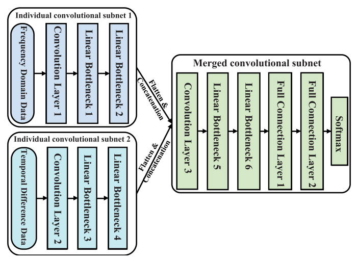

2020
A Real-time Data Collection Mechanism With Trajectory Privacy in Mobile Crowd-Sensing
X. Niu, H. Huang*, Yantao Li*
IEEE Communications Letters, October 2020
[pdf]

SCANet: Sensor-based Continuous Authentication with Two-stream Convolutional Neural Networks
Yantao Li, H. Hu, Z. Zhu, G. Zhou
ACM Transactions on Sensor Networks, July 2020
[pdf]
Using Feature Fusion Strategies in Continuous Authentication on Smartphones
Yantao Li, B. Zou, S. Deng, G. Zhou
IEEE Internet Computing, April 2020
[pdf]

SmartJump: A Continuous Jump Detection Framework on Smartphones
Yantao Li, X. Peng, G. Zhou, H. Zhao
IEEE Internet Computing, April 2020
[pdf]